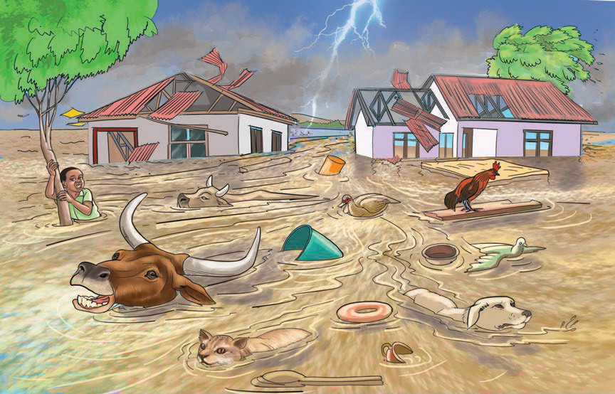

Figure 14 illustrates extreme floods caused by climate change.

Climate change is also associated with outbreaks of diseases that did not previously exist in an area. For example, highland areas that did not experience malaria before, now have malaria-causing mosquitoes due to the increase in temperature as a result of climate change. All these have significant effects on human beings and other organisms.
Climate change mitigation measures
Climate change can be mitigated by forest conservation and afforestation. Forests and trees absorb carbon dioxide from the atmosphere. Carbon dioxide contributes to global warming.